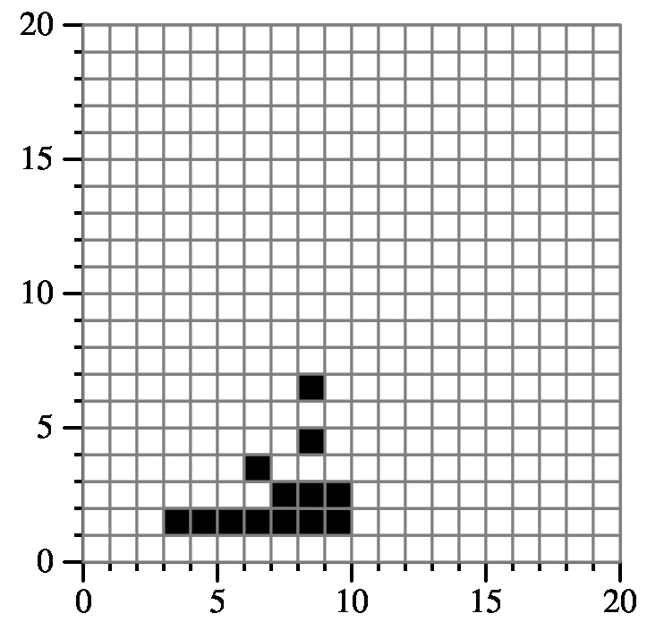

Type 1 |
Type 2 |
Type 3 |
Type 4 |
Example 0:
{"1 1 6 8 1",
"11 1 16 8 2",
"1 11 6 18 3",
"11 11 16 18 4"}
Returns: 82
Here is a drawing of the relevant part of the grid:
Example 1:
{"1 1 11 11 1",
"1 1 11 11 2",
"9 9 19 19 3",
"9 9 19 19 4"}
Returns: 172
Example 2:
{"1 6 9 9 1"
"1 9 7 10 1",
"1 5 8 7 1",
"2 6 8 8 1",
"2 1 3 4 1"}
Returns: 40
Example 3:
{"7 5 9 6 4",
"6 3 9 6 4",
"8 3 9 8 4",
"5 9 10 10 4",
"5 3 8 5 4"}
Returns: 13
Example 4:
{"7 1 10 3 1",
"8 2 9 7 4",
"5 3 7 4 3",
"4 3 9 4 2",
"3 1 9 2 1"}
Returns: 13
|  |
Example 5:
{ "1 12 7 16 3",
2 10 7 13 3",
2 2 10 11 4" };
Returns: 54
I'll give an example here, which is example 5 above:
{ "1 12 7 16 3",
2 10 7 13 3",
2 2 10 11 4" };
This results in the following grid -- I've drawn the outlines of the three
rectangles in different colors:
Now, what I did was split up my grid into rectangles. Order all of the x1's and x2's, and all of the y1's and y2's:
The way I identified patterns was as 2x2 grids, which represent how each rectangle is colored, as long as the grid starts on an even row and column. For example, pattern "A" is used when a rectangle has all of the even columns black and odd columns white. Pattern "D" has all of the even columns white and the odd columns black.
Once you have your grid broken into rectangles, and you have identified the patter for each rectangle, then you determine how many black squares are set in each rectangle. That takes a little effort, because you have to consider whether the starting rows/columns are even or odd, and whether the width/height is even or odd.
In this example, the upper-left rectangle will be counted as having zero black squares, because it is pattern "A", but it starts on an odd column. The rectangle to its right will add 9 black squares, because it is a 5x3 rectangle of pattern "A", starting on an even column (yes, it starts on an odd row too, but that doesn't matter in this case).
I used bit arithmetic and single ints to hold the patterns. You may want to give that some thought, as I found it was easier.
Good luck -- this one is fun, but takes some attention to detail.
| X | Y | Width | Height |
| 1 | 2 | 1 | 8 |
| 1 | 10 | 1 | 1 |
| 1 | 11 | 1 | 1 |
| 1 | 12 | 1 | 1 |
| 1 | 13 | 1 | 3 |
| 2 | 2 | 5 | 8 |
| 2 | 10 | 5 | 1 |
| 2 | 11 | 5 | 1 |
| 2 | 12 | 5 | 1 |
| 2 | 13 | 5 | 3 |
| 7 | 2 | 3 | 8 |
| 7 | 10 | 3 | 1 |
| 7 | 11 | 3 | 1 |
| 7 | 12 | 3 | 1 |
| 7 | 13 | 3 | 3 |
I had a struct for each rectangle, which contained these fields, plus the "pattern". I stored the pattern as an int, and I only used the lower four bits of the int:
| X | Y | Width | Height | 0x0 |
| 1 | 2 | 1 | 8 | 0x0 |
| 1 | 10 | 1 | 1 | 0x0 |
| 1 | 11 | 1 | 1 | 0x0 |
| 1 | 12 | 1 | 1 | 0x5 |
| 1 | 13 | 1 | 3 | 0x5 |
| 2 | 2 | 5 | 8 | 0x0 |
| 2 | 10 | 5 | 1 | 0x0 |
| 2 | 11 | 5 | 1 | 0x0 |
| 2 | 12 | 5 | 1 | 0x5 |
| 2 | 13 | 5 | 3 | 0x5 |
| 7 | 2 | 3 | 8 | 0x0 |
| 7 | 10 | 3 | 1 | 0x0 |
| 7 | 11 | 3 | 1 | 0x0 |
| 7 | 12 | 3 | 1 | 0x0 |
| 7 | 13 | 3 | 3 | 0x0 |
Next, let's process the second rectangle: [2, 10, 7, 13, 3]. In this pattern, the odd numbered columns are block, so the pattern is pattern D, or 0xa. So, you go through each of the rectangles in your map that belong to the second rectangle, and you can do a binary or of 0xa with the patterns that are there already:
| X | Y | Width | Height | 0x0 |
| 1 | 2 | 1 | 8 | 0x0 |
| 1 | 10 | 1 | 1 | 0x0 |
| 1 | 11 | 1 | 1 | 0x0 |
| 1 | 12 | 1 | 1 | 0x5 |
| 1 | 13 | 1 | 3 | 0x5 |
| 2 | 2 | 5 | 8 | 0x0 |
| 2 | 10 | 5 | 1 | 0xa |
| 2 | 11 | 5 | 1 | 0xa |
| 2 | 12 | 5 | 1 | 0xf |
| 2 | 13 | 5 | 3 | 0x5 |
| 7 | 2 | 3 | 8 | 0x0 |
| 7 | 10 | 3 | 1 | 0x0 |
| 7 | 11 | 3 | 1 | 0x0 |
| 7 | 12 | 3 | 1 | 0x0 |
| 7 | 13 | 3 | 3 | 0x0 |
Next, let's process the last rectangle: [2, 2, 10, 11, 4]. This is a checkerboard, where the lower-left and upper-right corners are set: Pattern F, which is 0x9. So, you go through each of the rectangles in your map that belong to the last rectangle, and you can do a binary or of 0x9 with the patterns that are there already:
| X | Y | Width | Height | 0x0 |
| 1 | 2 | 1 | 8 | 0x0 |
| 1 | 10 | 1 | 1 | 0x0 |
| 1 | 11 | 1 | 1 | 0x0 |
| 1 | 12 | 1 | 1 | 0x5 |
| 1 | 13 | 1 | 3 | 0x5 |
| 2 | 2 | 5 | 8 | 0x9 |
| 2 | 10 | 5 | 1 | 0xb |
| 2 | 11 | 5 | 1 | 0xa |
| 2 | 12 | 5 | 1 | 0xf |
| 2 | 13 | 5 | 3 | 0x5 |
| 7 | 2 | 3 | 8 | 0x9 |
| 7 | 10 | 3 | 1 | 0x9 |
| 7 | 11 | 3 | 1 | 0x0 |
| 7 | 12 | 3 | 1 | 0x0 |
| 7 | 13 | 3 | 3 | 0x0 |
Now, for each rectangle, you have the following information:
for (i = 0; i < 2; i++) {
for (j = 0; j < 2; j++) {
If the cell corresponding to column i and row j in the pattern is set, then {
Count the number of cells in the rectangle whith x%2 = i, and y%2 = j.
Add these to the total sum.
}
}
}
For example, consider the rectangle [2, 2, 5, 8]:
Matching created rectangles to input rectangles efficiently: In honors lab2, my program is correct but runs slow; I believe the reason why it runs slow is because of how I determine every input rectangle that each created rectangle corresponds to, needed to determine the patterns. I've written it in two completely different ways that work, but I can't figure out how to optimize this part. Is there an obvious solution I'm missing? Thanks.
James S. Plank: Do "sh -x tests.sh" and let me know the number of a test that is taking too long.
(Anon. Comp to classmates): Test 71 is one that takes longer than most others.
James S Plank 2: OK -- so there are 100 input rectangles. When you look at the unique x and y values here, there are 169 unique x values and 172 unique y values. That means you need to test 168*171 = 28728 rectangles. For each of these, you check it with the 100 input rectangles to see how many black squares there are. So:
Iterate x values (168) Iterate y values (171) Iterate input rectangles (100) Update number of black squares in the x/y rectangle: O(1)There will be 2,872,800 iterations, each of which should be quick: O(1). This should take under a tenth of a second (my code is 0.076 seconds). I hope that helps.